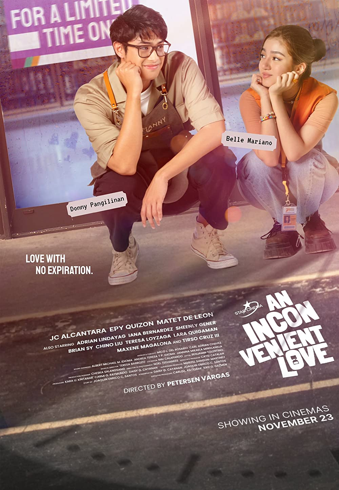

An Inconvenient LoveAn Inconvenient Love (with a working title as Open 24Ever) is a Philippine romantic comedy film directed by Petersen Vargas and written by Joaquin Enrico Santos and Daisy Cayanan. The film is roduced by Star Cinema.It stars Belle Mariano and Donny Pangilinan in the lead role. The film was released on 23 November 2022, in 175 cinemas, in the Philippines.Romance has had to stand the test of time every once in a while. Add to it one’s individual struggles at home and work, and the idea of romance begins to seem highly unattainable. But then comes a person who makes you want to take a step toward dating and romance. They make you feel happy and loved, and you become ready to take risks. But even then, there are challenges one has to face; one of them is striving to achieve personal goals while at the same time devoting time to one’s partner. It becomes increasingly difficult to maintain a steady balance when two things demand your attention at the same time. This is where maturity, understanding, and compromise come into the equation. “An Inconvenient Love,” tells the story of one such pair who is learning what it means to love and at the same time achieving personal goals. Starring Belle Mariano and Donny Pangilinan, the Filipino movie “An Inconvenient Love” draws inspiration from “To All the Boys I’ve Loved Before” and adds a flavor of its own to this coming-of-age romantic comedy story.
“An Inconvenient Love” paints the story of Ayef, a young girl who works part-time at a convenience store. She hails from a middle-class family that can barely make ends meet. Then we have Manny, the son of a rich industrialist, who decides to carve his own path by setting up his own business. The two meet in the most unlikely situation one can imagine. Manny was running away from a protest rally held against his father’s corporation. He changes his appearance on the go, and while he is on the bridge, he asks Ayef to play along with his story. Sparks fly between the two.Soon, Manny begins to frequent the store where Ayef is working with the intention of courting her. But Ayef is opposed to the idea since she is leaving the country soon to pursue an internship in Singapore.
But with Manny’s constant visits and her colleagues’ encouragement, Ayef agrees to date Manny but lists conditions for their courtship. They decide that they would break up on October 4, 2022, the day she was leaving for Singapore. The conditions also state that there will be no grand gestures of affection or celebrations of the monthly anniversaries. Thus, the duo begins dating on their own terms.
But as fate would have it, their relationship hits a roadblock after a reality check during Manny’s birthday. Manny did not stand up to his father, nor did he say anything in support of Ayef. Ayef is dejected and decides to break up with him before the deadline. The two separate but are forlorn. On the day of Ayef’s departure to Singapore, Manny and Ayef realize that what they have is love for each other and that they need to make it work regardless of the struggles they will face. The movie ends with the couple reuniting without giving up on their dreams and taking a chance on their love. Ayef departs for Singapore as planned, and the two decide to give their long-distance relationship a chance.
This Belle-Donny starrer romcom is a breath of fresh air amongst all the reused and recycled stories we see floating around. The lead characters are portrayed as strong, independent, mature, and sensible enough to keep their innocence but still know the ways of the world. Belle and Donny are a treat to watch on screen yet again. The pair shot to fame after starring in the hit teenage romance show “He’s Into Her” and have appeared together in a few movies since. There is no denying the chemistry between the two.
The supporting cast does a stellar job of being great friends to our leads and being their voice of reason. The comic timing displayed by them is impeccable, which only adds to the fun factor of the story. Additionally, the personal lives of our leads are quite realistic. Not all parents might see eye to eye, and financial problems are one of the common causes of familial clashes. Manny’s father is an arrogant man who does not care for anyone but himself. When things don’t go his way, he looks down on others. Manny’s mother has only neglected her son to the extent that she forgot that he is still a child. She is blinded by her hatred for Manny’s father, and she will have her own space.
Ayef’s father, on the other hand, has been trying and failing to secure a decent job to provide for his family. This brings a burden onto her mother, and there are frequent clashes between the couple. How each of their parents treats them shows how their different upbringing instills different values in the children. While Ayef grew up frugally, saving money and doing things on her own, Manny had a slightly luxurious upbringing, but he had to grow up much earlier than his age. Neither wanted their love to be an inconvenience to the other, given the hardships they faced in their personal lives, but in the end, their love was the most convenient thing they could achieve.
“An Inconvenient Love” is set in modern-day Manila, Philippines. The leads are in their early twenties, and their story arcs make them relatable to most of the younger audience who might be going through similar situations. The color palette throughout the film is quite vibrant and bubbly, echoing the lighthearted nature of the story. The color scheme only gets darker when the couple faces a decisive moment in their relationship after the disastrous dinner at Manny’s house. Even the costumes the cast wears are something you’d find the young crowd wearing every day. The characters exude comfort in the styling and clothing they wear, despite the struggles they face in their lives.
The dialogues are simple yet profound, especially the ones that our leads deliver when confessing their love and talking about their problems. The sprinkle of slang and social media terminology when Ayef and her colleagues discuss Manny is a good addition to making the dialogue delivery lighter and better understandable. The overall cinematography of the film works well in favor of the story. The focus is largely kept on the leads or the rest of the cast; the background is just a prop for the story’s setting, and the frames don’t widen to take in more scenery than necessary. “An Inconvenient Love” is a good choice if you’re looking for something light and breezy and something that will make you root for the leads. The soundtrack is a fun mix of tracks and would make a good addition to your playlist if you like the romance and dance-pop genres.
-a graduating student and aspiring international animator who works part-time at a convenience store named 24-Ever.
-22-year-old owner of HalaManny, a boutique plant shop near 24-Ever.